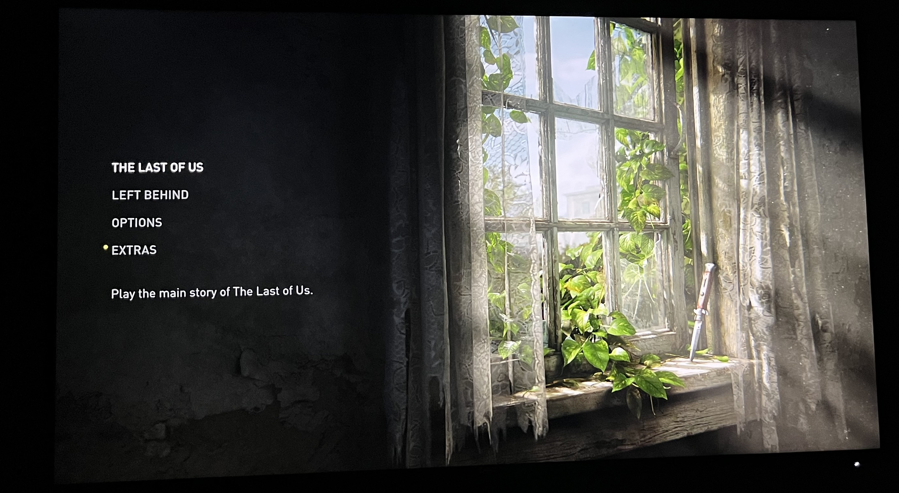
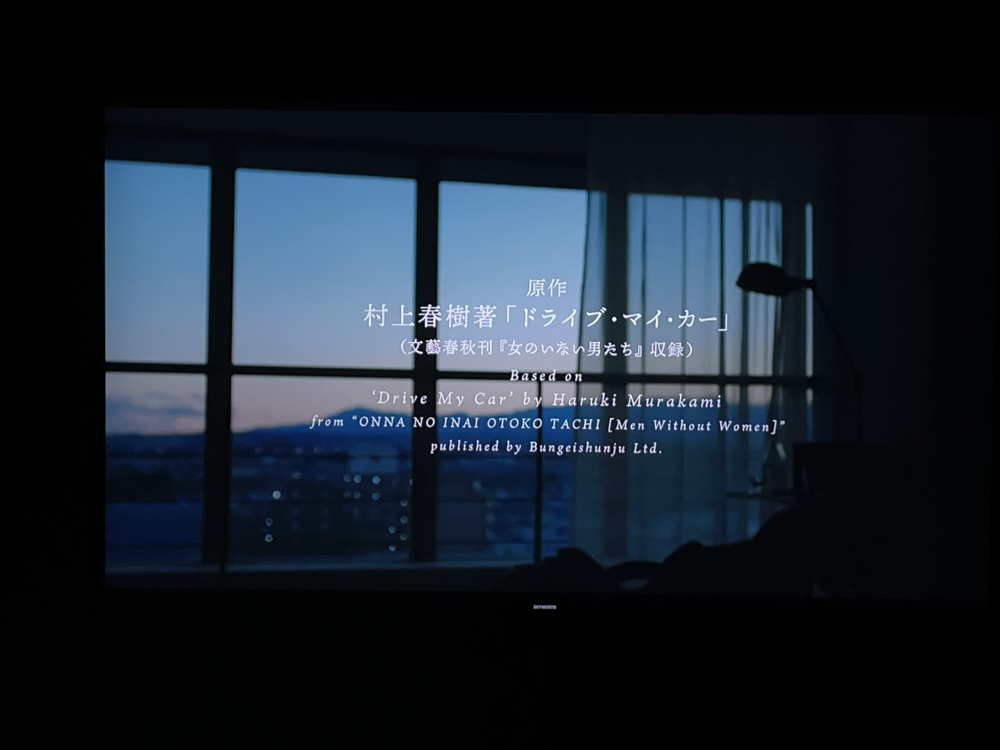

在很多时候，我都感觉像是回到了 2019 年的那个十月。我能清楚听到直升飞机在我头顶盘旋着呼啸而过。就像，历史的车轮从身边碾过一样。兵荒马乱，沧海桑田。
战争，全球范围下的疫情，刺杀，游行，第三任期。所有的恐惧是来自种种的不真实感，像是真人 show，或是被人编排好了剧本，充满戏剧性，夸张，难以言说的巧合，阳谋。顺着这样一条线索最终走向宇宙洪荒，或是世界末日。
我想起上高中的时候，忘记是高一还是高二，也忘记是临近暑假还是寒假，总之是临近假期的期末考试，自己在宿舍里头晕脑胀，量了体温以后发现烧到了 38 摄氏度，身边的室友都劝我下午不要去考试了。我想了想，不行，不能弃考。下午考试还是过去了，那是一场物理考试，那次的物理试题出的又比较偏，题目难度也很大。我不知道是不是因为我发烧的缘故，总之那次考试过程，自己的思路竟然异常清晰。最后的考试结果，我是那次物理考试中唯一一个上了 80 分的人，我自己都有点难以相信。
这是关于发烧，最神奇的一次经历。
游戏
- The Last of Us™ Part I | PlayStation 5
- Xenoblade Chronicles™ 3 | Nintendo Switch
- Xenoblade Chronicles™ 2 | Nintendo Switch
- スプラトゥーン3 | Nintendo Switch
- Elden Ring | PlayStation 5
- Detroit: Become Human | PlayStation 5
The Last of Us™ Part I 是我今年玩到的游戏中，带给我无限感伤的游戏。游戏的总体流程不长，线性关卡，有些许的解谜要素，战斗部分在重制版中，加入了陀螺仪瞄准和 ps5 手柄的适配。游戏通关后，自己又去重新听了三年前 Hard Image 的两期播客：
冗长的感想主要集中在故事的讲法，性格如何塑造，以及对不可知做法的一些想象。
以前就经常和其他人讲，游戏之所以能够在艺术表达上高于电影等艺术媒介，因为游戏比电影多了一层「交互」的维度。然而真正能把「交互」这一维度用好的游戏叙事却很少，但恰恰 The Last of Us™ Part I 算是这么一部作品。其中有很多设计都很精巧，比如主角 Joel 被绳子吊起来，整个屏幕视角上下颠倒，然后要在这样一种状态下保护 Ellie。以及 Joel 和 Ellie 被突如其来的意外事件分开，经历险阻为 Ellie 的第一次开抢埋下伏笔。一些场景至今想起依然难以释怀，第一次陪着 Ellie 穿越酒店，在一间一间房间中经过时，看到浴室里的相对而坐的骷髅，它们临死的前一刻在想些什么呢。在后来的大学场景中，和 Ellie 一起走过学生宿舍，你能看到下午三点半的阳光，透过窗子打在了学生宿舍的书桌上，上下铺的床铺上积了很厚的一层灰尘，墙上还挂着当时流行的游戏海报，书柜中几本书，还有几盒游戏。后来到了一个临时的地下避难所，这里不久之前明明就有幸存者，周边的玩具，黑板也证明了有小孩子在这里生活。然后因为一次意外，里面的幸存的人都不见了踪影。
游戏手法的高明之处，就在于他把上述作者想要表达的内容，传递的情感，透过游戏场景，剧情设计，关卡设计给到玩家，最后由玩家亲自去经历，去体验这样的一个末日故事。

「异度之刃2」很早就买了，21 年元旦的时候沉迷过一段时间，后来因为别的事情不了了之，就搁置了。今年是因为「异度之刃3」要发售，就赶紧把「异度之刃2」拿出来，给通关了。七月份的时候通的关，那一天为了一口气看到最后的剧情，一直熬到了凌晨四点。
「异度之刃3」整体上游玩体验还是很不错的，游戏的整体机制，寻路系统，英雄任务等等，相比前作都是巨大的提升。可能唯一不太舒服的是后半段的节奏问题，在世界观展开以后就突然急转直下，反派也都太过脸谱化。导致最后的 boss 战也没有太多亮眼的地方。
Splatoon3 可以算上十月份以来，游玩时间最长的游戏。此前的自己唯一接触过的射击游戏就是 CS，那还是十几年前的的事情。Splatoon 作为一款 TPS ( 第三人称射击游戏 ) 真的很独特。从玩法，到设计，再到创意，都是独一无二。赞叹任天堂的想象力。
Elden Ring 我到最后也没有玩完，大概是玩到王城下水道那个地方，玩不下去了。此前从没有过任何魂游戏的经验，导致我刚开始玩 Elden Ring 时，甚至新手村都出不去。后来找了一个攻略，就想着按照攻略玩，但那样每一步都按照攻略走，就完全丧失了玩游戏的意义。到后来就索性不去玩了。也许以后会有某个契机，把剩余的内容玩完。
音乐
- Can’t Take My Eyes Off You - Joytastic Sarah
- The Last of Us - Gustavo Santaolalla
- The Path ( A New Beginning) - Gustavo Santaolalla
- The Choice - Gustavo Santaolalla
- All Gone - Gustavo Santaolalla
- Moebius Battle
其中的很多首都是出自 The Last of Us™ Part I 游戏中的配乐。
电影

- 『钛』
- 『间谍之妻』
- 『坏小子』
- 『黑客帝国』
- 『驾驶我的车』
- 『鬼灭之刃』
- 『反叛的鲁鲁修』
- 『死亡笔记』
- 『冰菓』
- 『春风沉醉的夜晚』
- 『旺角卡门』
- 『弥留之国的爱丽丝 第二季』
今年并没有很认真地去标记电影了，主要是因为自己在写自己的 app，也就没有很大的动力再去打开 douban。看了很多动漫，有一些没有标记上。
书
技术类
- iOS Animations by Tutorials
- iOS 15 Programming for Beginners
- Advanced iOS App Architecture
- Design Patterns By Tutorials
- Core Data by Tutorials
非技术类
- 斯普特尼克恋人
- 没有女人的男人们
- 神的孩子全跳舞
时刻
今年有很多神奇的时刻和神奇的故事，比如蛰伏一年，Golden State Warriors 终于又重新回到季后赛，过五关斩六将，杀到总决赛，在 6 月 17 日这天终于捧杯，Steph Curry 也终于拿下了 FMVP。
比如 Messi 的故事也终于圆满，成为了传奇。
后来发现，小智也在这一年拿到了属于他的冠军。
@xiaolwl
今年的很多时候，我会去看 @xiaolwl 生前最后一条微博下面的评论。我感觉那里的评论是真实的。
炉石停服
14 年炉石刚开始的时候，是主打 iPad 上的卡牌游戏，当时的手边刚好有一台 iPad mini2，就不知不觉上手了。但当时只是玩了一段时间之后就不玩了。一直到 2018 年，当时的自己阴差阳错，机缘巧合又再次打开炉石，一直玩到了现在。炉石可以算做陪伴我走过了很长一段低谷的游戏。
结语
大概在一周以前，平安夜那晚。自己突然感觉身体不适，看了一下 Apple Watch，明明是静坐，心率却一直在 100 上下，摸了摸额头，额头也烫的厉害。心想，大概率是感染了。那一天晚上很痛苦，躺在床上翻来覆去睡不着，身体发烫，心脏也跳的很快，能清楚听到心脏每一次跳动的的声音，还伴随着心绞痛。想着时间快快过去吧，快点跳到早上，好出去买药。可时间却走的无比缓慢，从十二点到一点，从一点到两点，从两点到三点。最后挨到五点钟的时候，起床烧了一壶水，坐在椅子上，半闭着双眼，轻瞥到 Apple Watch 上的心率依然在 100 上下。然后我大概就是那样半躺着靠着椅背，一直挨到七八点钟，出门买药。
从小到大，有过几次发烧，但都没有这次来得这么凶猛猛烈。希望之后能慢慢恢复过来，希望爸爸妈妈，身边的亲人也都身体健康。
🌻